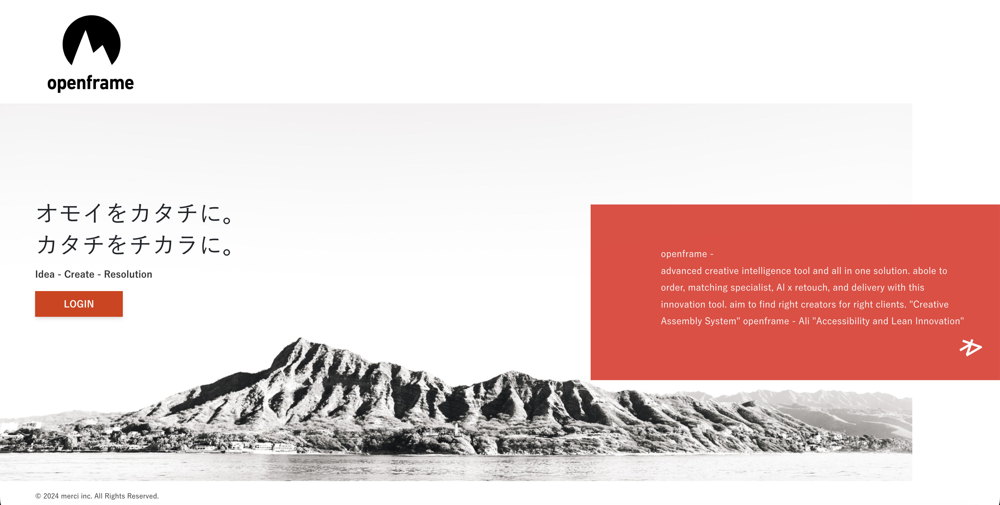

Order
案件情報、必要カット、納品形式、スケジュールを整理。

Serviceへ戻るメルシーでは、自社開発のクリエイティブ管理システム「Openframe」を活用し、クライアントとフォトグラファー双方のやり取りを一元管理しています。
案件ごとに最適なクリエイターをアサインし、発注から撮影、編集、納品までを、よりシンプルかつ確実に進めます。
クライアントは、発注後に納品を待つだけ。撮影後の編集もメルシーが一括して担うため、フォトグラファーは撮影に集中できます。
Platform / Openframe / Workflow / Delivery
発注から撮影、AI Retouch、納品までを、ひとつの流れとして整理する制作プラットフォームです。案件情報、クリエイター選定、編集進行、納品データをつなぎ、制作をより軽く、より確実に進めます。
案件情報、必要カット、納品形式、スケジュールを整理。
案件に合うクリエイターを選定し、制作チームを組成。
撮影日程の調整から現場進行、撮影品質の管理までを行います。
編集、補正、確認作業をまとめて管理し、品質を安定化。
進行状況とデータを一元化し、納品までの抜け漏れを防ぐ。
撮影管理・制作進行のご相談を承ります。